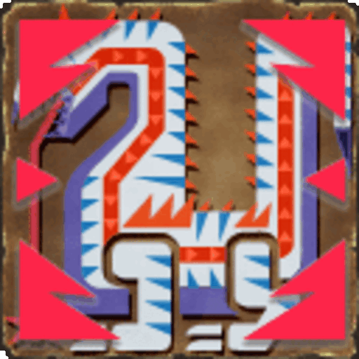
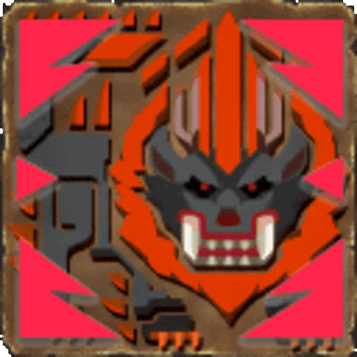

GL Master Guide
GL Master Guide
About the Run:
TThe GL (Gunlance) Master achievement is a challenge on the MezeLounge server. This guide will walk you through the essentials of achieving this feat, including optimal gear setups, strategic monster selections, and tips/tricks Upon completing the challenge, the following reward will be granted:

Note: This guide is based on my own experience completing the run. It is not absolute and is subject to any change or adaptation you or your team prefers to make.
Criteria :
- Achieve the required floors with a team, all equipped with Gunlance
- 1 & 2 Player Groups need to reach floor 60
- 3 Player Groups need to reach floor 80
- 4 Player Groups need to reach floor 100
Length of the Run:
The average runtime lengths are listed below for this challenge:
| Entry | Run Time | Party Size |
|---|---|---|
| GL Run #1 | 7:08:50 | 2 Players |
| GL Run #2 | 5:25:26 | 2 Players |
| GL Run #3 | 4:46:00 | 2 Players |
| GL Run #4 | 5:56:20 | 3 Players |
Recommended Party Size:
The Gunlance achievement run is one of the easier runs to complete, due to GL’s very good guarding abilities, in conjunction with its very respectable mobility from Blast Dashing. The Heatblade also makes GL deal fairly high elemental damage, and also makes it one of the best weapons for building up Hexaflash, which can help with some fights. Since Gunlance has relatively low damage, yet is completely safe against most monsters, the recommended team size for the run is 2 players.
Team Composition
Since Gunlance is a very self-sufficient weapon, with very good defensive tools, I recommend every team member run a full DPS setup
WAs the main issue Gunlance faces in the achievement run is its below average damage output, having each player be DPS-focused is the best way to mitigate this and reduce the time needed for the run.
Set Building and Optimization
Weapon Choices
Recommended Gunlance: Premium Fire Raviente (Winged Fireblast or Allure Heatlance) is highly recommended for this achievement. Fire is overall the best element for Zeniths, and a lot of the good monster picks are weak to Fire. It does not matter which Fire Ravi you go for, as the stats are identical, or if you use Flash or Shine, as you typically do not utilize Shelling.
Weapon Outlier: If your team has any Enrapture Shot “Rapsodie” available, this weapon will be a strict improvement over Ravi.
Armor Sets
Here are some recommended armor sets for the GL Master achievement run:
- Full DPS: This set works for both the Premium Ravi and the Enrapture Shot Gunlances.

Recommended Sigils
For this run, I recommend:
- GL Up +15
- Attack + x
- Attack + x
The last two sigils should have the same skills:
- Attack + x
- Attack + x
- Attack + x
External Buffs
- Full DPS
- Guild Poogie: Poogie Defense (Poogie Taijutsu if your Clan does not have Poogie Defense)
- Guild Food: All Res +20
- SR: Def +180/All Res +20
- Pseudo Support
- Guild Poogie: Poogie Status Attack/Poogie Defense
- Guild Food: Wide Area +3
- SR: Def +180/All Res +20
Best Monster Picks and Choices
The following list/descriptions are based on my own opinion of the following factors:
- How fast the monster takes on average to kill
- The difficulty of execution for a successful kill
- The danger level of the monster (factors in the rise of floor scaling)

S Tier
 Daimyo Hermitaur: Very weak to Fire, every attack he has can easily be blocked. As long as he does not reach Blast phase, the fight should be completely free, and with Heatblade active, you should have more than enough damage to kill him in time If he does reach blast phase, feel free to take a dash juice following his transition, this will trivialize this mode as there should be little to no stamina issues even without Perfect Guards. Fight Example
Daimyo Hermitaur: Very weak to Fire, every attack he has can easily be blocked. As long as he does not reach Blast phase, the fight should be completely free, and with Heatblade active, you should have more than enough damage to kill him in time If he does reach blast phase, feel free to take a dash juice following his transition, this will trivialize this mode as there should be little to no stamina issues even without Perfect Guards. Fight Example Blangonga: Not too much to say here. Blangonga has a very low HP value, is weak to Fire, all moves are blockable, and is overall just a very very good pick. Fight Example
Blangonga: Not too much to say here. Blangonga has a very low HP value, is weak to Fire, all moves are blockable, and is overall just a very very good pick. Fight Example Doragyurosu: High damage, but almost all moves are easily blocked (Blast dash away from his death laser). Also relatively squishy, which makes this a very good pick. Fight Example
Doragyurosu: High damage, but almost all moves are easily blocked (Blast dash away from his death laser). Also relatively squishy, which makes this a very good pick. Fight Example Khezu: No extensive opinion is held for the Khezu fight. Overall, has one risky move (thunder balls). Avoid being in front, or Blast Dash to the side when he does this move and it should be taken down with ease. Fight Example
Khezu: No extensive opinion is held for the Khezu fight. Overall, has one risky move (thunder balls). Avoid being in front, or Blast Dash to the side when he does this move and it should be taken down with ease. Fight Example Hyujikiki: Weak to Fire, all but one move can be blocked. This makes Hyuji a very good pick for GL. The only dangerous move he does is the big needle one-shot. This move can be Perfect Guarded for a free KO, or simply evaded. Fight Example
Hyujikiki: Weak to Fire, all but one move can be blocked. This makes Hyuji a very good pick for GL. The only dangerous move he does is the big needle one-shot. This move can be Perfect Guarded for a free KO, or simply evaded. Fight Example Bogabadorumu: Always a solid pick, every move can be easily dealt with by guarding. Especially dangerous moves, such as the tail slam -> landmines can be strong guarded to be easier to deal with. Fight Example
Bogabadorumu: Always a solid pick, every move can be easily dealt with by guarding. Especially dangerous moves, such as the tail slam -> landmines can be strong guarded to be easier to deal with. Fight Example Hypnoc: Weak to Fire, low HP and one dangerous move makes Hypno a very solid pick. The only move that cannot be blocked is the butt slam, but Blast Dash makes it easy to avoid. Fight Example
Hypnoc: Weak to Fire, low HP and one dangerous move makes Hypno a very solid pick. The only move that cannot be blocked is the butt slam, but Blast Dash makes it easy to avoid. Fight Example Tigrex: Very safe pick. Easily dealt with by blocking normally, and dies fairly quickly. Fight Example
Tigrex: Very safe pick. Easily dealt with by blocking normally, and dies fairly quickly. Fight Example Plesioth: Weak to fire, can be easily blocked and lots of free reflect damage during enrage animation makes Plesioth a very good pick for Gunlance. Fight Example
Plesioth: Weak to fire, can be easily blocked and lots of free reflect damage during enrage animation makes Plesioth a very good pick for Gunlance. Fight Example Gravios: A very solid choice for Gunlance, since almost all its moves can be blocked easily. The exception to this is the jump -> slam -> nuke. This move can, however, be easily dealt with by turning around for the jump. Fight Example
Gravios: A very solid choice for Gunlance, since almost all its moves can be blocked easily. The exception to this is the jump -> slam -> nuke. This move can, however, be easily dealt with by turning around for the jump. Fight Example
A Tier
 Giaorugu: Weak to Fire and overall a good pick, though he has some dangerous moves. The instant spin is dangerous as always if you get greedy with attacks, but can be blocked easily. Fight Example
Giaorugu: Weak to Fire and overall a good pick, though he has some dangerous moves. The instant spin is dangerous as always if you get greedy with attacks, but can be blocked easily. Fight Example Harudomerugu: A very safe pick unlike most weapons. The only move that cannot be guarded normally is the big ball slam after the machine gun balls. You can block it going up, but have to strong guard the slam. Fight Example
Harudomerugu: A very safe pick unlike most weapons. The only move that cannot be guarded normally is the big ball slam after the machine gun balls. You can block it going up, but have to strong guard the slam. Fight Example Akura Vashimu: Another very safe GL pick. While Akura is quite tanky, none of his moves are particularly dangerous with Gunlance and the normally unsavable underground grab can be guarded normally. Fight Example
Akura Vashimu: Another very safe GL pick. While Akura is quite tanky, none of his moves are particularly dangerous with Gunlance and the normally unsavable underground grab can be guarded normally. Fight Example-  Baruragaru: Baru is another solid pick if you know how to deal with him. Poses no real threat to Gunlance shields. If you have one player in front, and one on the side, Baru should alternate the side tongue move and a random other move. Fight Example
 Espinas: A fairly low-risk pick at first, very safe once you have Anti-Venoms. Watch out for instant charges if you don't have Antis active. Aside from that, the only problematic move he has is the flying poison explosion. Fight Example
Espinas: A fairly low-risk pick at first, very safe once you have Anti-Venoms. Watch out for instant charges if you don't have Antis active. Aside from that, the only problematic move he has is the flying poison explosion. Fight Example
B Tier
-  Midogaron: Mido is in a bit of a weird spot. With very few problematic moves, but an extremely high damage threshold on higher floors which makes him very punishing if you get greedy with attacks. Aside from the usual instant headbutt one-shots you might get you with, his only dangerous move is the fire tornado. Fight Example
C Tier
 Toridcless: One of the most annoying monsters to deal with on blocking weapons, due to the amount of Z Wind, which pushes you back unless you perfect guard. Unlike Lance, Gunlance does have some decent mobility, which allows it to deal with Torid's laser much easier. Fight Example
Toridcless: One of the most annoying monsters to deal with on blocking weapons, due to the amount of Z Wind, which pushes you back unless you perfect guard. Unlike Lance, Gunlance does have some decent mobility, which allows it to deal with Torid's laser much easier. Fight Example
F Tier
 Rathalos: Unlike most weapons, Rathalos is actually very dangerous with Gunlance. His fire moves do significant damage through block, which when combined with the damage over time fire aura when enraged he will go through your health bar surprisingly quickly. Fight Example
Rathalos: Unlike most weapons, Rathalos is actually very dangerous with Gunlance. His fire moves do significant damage through block, which when combined with the damage over time fire aura when enraged he will go through your health bar surprisingly quickly. Fight Example Rukodiora: Preferably, avoid at all costs. Has a high danger factor due to many one-shot attacks, and high HP. The magnetism can also be problematic for your positioning.
Rukodiora: Preferably, avoid at all costs. Has a high danger factor due to many one-shot attacks, and high HP. The magnetism can also be problematic for your positioning. Gasurabazura: Preferably, avoid at all costs. Similarly high damage and HP to Ruko, but with the addition of Z4 poison in phase 1. I don't recommend ever picking this, as I believe all other options to be better. Extremely dangerous.
Gasurabazura: Preferably, avoid at all costs. Similarly high damage and HP to Ruko, but with the addition of Z4 poison in phase 1. I don't recommend ever picking this, as I believe all other options to be better. Extremely dangerous.
Credits
✽ Special thanks to Flame, Kasumi, ZeroArcadia, Pitou, and Sera for discussing/reviewing the guide!